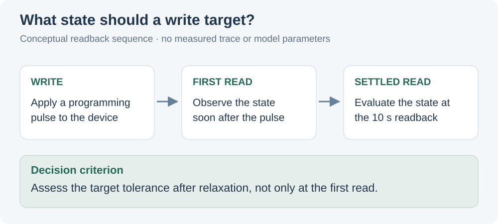
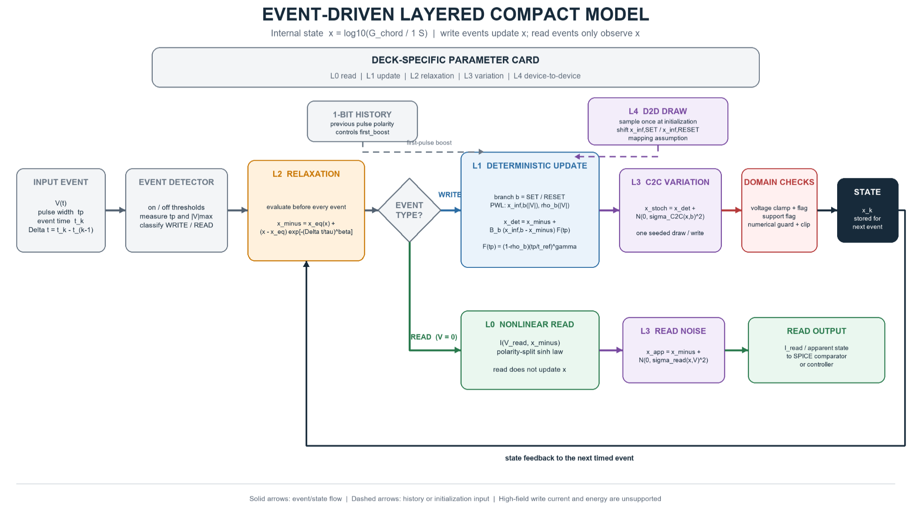
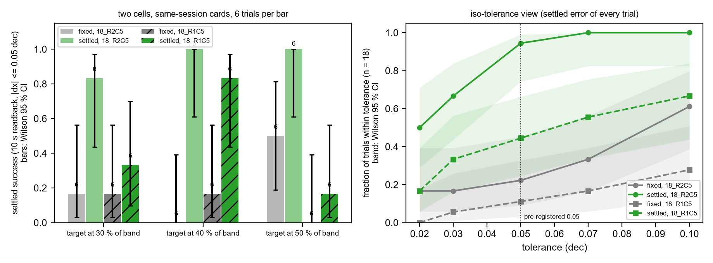

The research question
How can a programming algorithm reach a target conductance when a memristor’s response depends on its current state, pulse history, and relaxation after the write?
In Au–CeO₂ vertically aligned nanocomposite (VAN) devices, gradual conductance tuning provides a route to multilevel operation. However, a pulse that appears successful at the first read can leave a different state after relaxation. This project connects measured switching dynamics to a compact model and a program-and-verify strategy that targets the settled state.
device dynamics→Calibrate
compact model→Select
write pulse→Verify
settled state

The distinction is between reaching a state immediately after a pulse and retaining a useful state after relaxation. It makes the readback time part of the evaluation criterion, alongside tolerance and programming effort.
My contribution
I developed a measurement-calibrated behavioral compact model and experimentally validated model-informed programming. This work builds on my broader role in VAN RRAM fabrication, electrical characterization, and automated parameter extraction in Wang’s Thin Film Group.
- Characterization and calibration. I used pulse-response and relaxation measurements to connect the model to the device’s operating behavior, with MATLAB/Python workflows for analysis.
- Compact modeling. I modeled nonlinear and asymmetric updates, post-write relaxation, and variation. A layered structure separates read behavior, pulse updates, relaxation, and stochastic effects.
- Programming control. I used model predictions to select write pulses, then evaluated targeting error and programming effort in experimental program-and-verify tests.

Results & experimental scope
The compact model achieved 0.042-decade mean absolute error in 10-second settled-state prediction. In the reported programming experiment, targeting success within ±0.05 decade improved from 22% to 94%, while mean pulse count decreased from 3.3 to 2.7.

The device-to-device difference matters: calibration and programming policies need validation across more cells. The result supports the value of targeting the settled state, while the broader reliability of the approach remains an ongoing experimental question.
Project materials
View the project presentation on GitHub ↗
Related manuscript: Henan Wang, et al., “A CeO₂:Au Vertically Aligned Nanocomposite Memristor: From Nonideal Switching Dynamics to Model-Informed Conductance Multilevel Programming.” Manuscript completed; planned for submission to IEEE EDTM 2027.